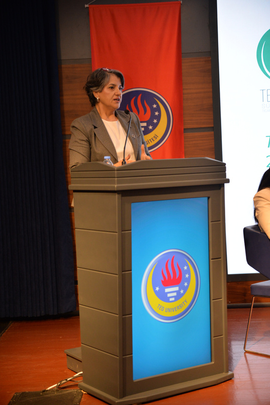
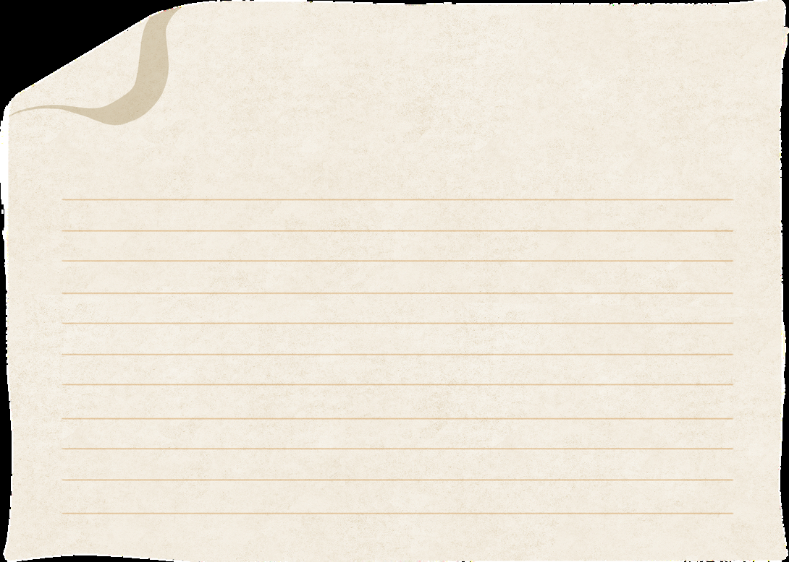
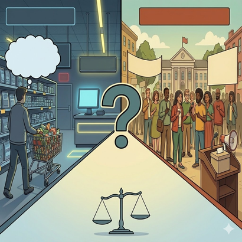

Everyone says they are critical of consumerism. It is blamed for climate change, credit card debt, fast fashion, empty lives, and shallow values. If dislike were enough, consumerism would have disappeared long ago. And yet, here we are… Shopping, scrolling, upgrading, replacing, often while criticizing the very system that makes all this necessary.
This should already make us uneasy because consumerism does not survive by accident. It survives because modern economies are built around it. This is not about people suddenly becoming greedy or irrational. It is about how economic stability itself has come to depend on continuous consumption. We do not just produce in order to live; we increasingly live in order to keep demand alive. That is not a cultural coincidence. It is an economic arrangement.
The discomfort around consumerism is therefore not really about buying things. It is about what happens when buying things starts doing the work that politics, redistribution, and collective decision-making used to do. When dissatisfaction is redirected into market choices, when inequality is softened through access to goods rather than addressed directly, and when social problems are reframed as personal shopping decisions, something important quietly shifts. People remain active, but mostly as consumers.

From "Nice to Have" to "Must Have": Why Consumption Became Necessary
In earlier economic thinking, consumption followed income. You earned money, then you spent it. Simple enough. This logic begins to change decisively with John Maynard Keynes. In The General Theory, consumption is no longer treated as a passive result of production, but as a key driver of economic stability. If demand collapses, the economy collapses with it.
Once consumption becomes central to macroeconomic stability, keeping people spending is no longer optional. It becomes policy-relevant. Governments worry about consumer confidence. Central banks worry about spending slowdowns. Entire economic debates revolve around whether households are buying enough. At that point, consumption stops being a sign of prosperity and starts becoming a requirement for it.
When consumption is necessary for the system to function, the question is no longer whether people want to consume, but how they will keep doing so.
This has an important implication that is easy to miss. When consumption is necessary for the system to function, the question is no longer whether people want to consume, but how they will keep doing so. Wage growth helps, of course, but when wages stagnate, other mechanisms step in. Credit expands. Debt becomes normal. Consumption continues, even when economic security does not. Consumerism, in this sense, is not a lifestyle choice; it is a structural condition.
Why We Keep Consuming Even When We Are Not Getting Richer
At this point, a reasonable question arises: if incomes are stagnant and insecurity is rising, why does consumption not slow down? Why does consumerism seem so stubbornly resilient?
One of the clearest economic answers comes from James Duesenberry. His relative income hypothesis tells us something that still feels uncomfortably accurate: people care less about how much they have in absolute terms than about how they compare to others. Consumption is social. It is relational. It is about position. This means that consumption does not stop just because income growth slows. When reference points move upward, when lifestyles around us become more expensive, maintaining one's place requires continued spending. Opting out is not neutral. It often feels like falling behind. Consumerism, then, is not driven by excess; it is driven by fear of visible decline.

A similar insight appears much earlier in the work of Thorstein Veblen, who described consumption as a language of status. This is often misunderstood as a critique of luxury. In fact, Veblen was making a more subtle point: consumption communicates belonging. It signals normality. Today, that signaling function is everywhere, only now it looks ordinary, even necessary.
In other words, people do not consume because they misunderstand their interests. They consume because economic participation and social recognition increasingly run through markets. Consumerism persists not because people are foolish, but because the system makes consumption feel like the safest way to stay afloat.
Exit Is Easy. Voice Is Hard.
At some point, consumerism stops being only about markets and starts reshaping politics. This is where the story becomes less comfortable, and more interesting. One of the most powerful ways to understand this shift comes from Albert O. Hirschman, who distinguished between two ways of responding to dissatisfaction: exit and voice. You either leave, or you speak up.
Consumerism makes exit incredibly easy. Don't like your phone? Switch brands. Don't like your internet provider? Change plans. Don't like public services? Go private, if you can afford it. Exit is quick, individual, and emotionally satisfying. Voice, on the other hand, is slow. It requires coordination, patience, and the uncomfortable act of dealing with others who disagree with you.

Over time, consumerism quietly teaches a lesson: switching is smarter than demanding change. Dissatisfaction is redirected away from politics and into markets. People do not stop caring; they simply stop caring collectively. In Hirschman's terms, consumerism institutionalizes exit. The more we rely on exit, the less capacity we have left for voice. This does not mean people become passive. On the contrary, they remain extremely active, just not as citizens. They compare, choose, optimize, and upgrade. What fades is the expectation that shared problems should have shared solutions. Consumerism does not silence people. It keeps them busy.
Inequality Without Redistribution: How Economies "Buy Time"
This logic becomes especially important once we bring inequality into the picture. Inequality is politically dangerous. Addressing it through redistribution requires conflict, negotiation, and institutional change. Consumerism offers a far less confrontational alternative: as long as people can keep consuming, tensions can be postponed. This is not a new insight. Karl Polanyi warned that when markets are allowed to organize social life without restraint, social protection erodes. Needs that were once addressed collectively are pushed into the market, to be solved through individual purchasing power. Consumerism fits perfectly into this logic. It privatizes social problems and repackages them as shopping decisions.
More recently, Wolfgang Streeck has described how advanced economies "buy time." Instead of resolving conflicts between democracy and capitalism, they rely on debt, credit, and financial expansion to keep consumption going. Redistribution becomes politically difficult; borrowing becomes economically convenient. Growth continues on paper while underlying tensions accumulate.
From an economic perspective, this arrangement works until it doesn't. It stabilizes demand in the short run but weakens the foundations of collective accountability. People remain economically active yet increasingly disconnected from the institutions that shape their lives. Consumption fills the space where political agency once lived.
Global Markets, Same Lives Everywhere
Now let's zoom out. Consumerism is not just a national phenomenon; it is global. As markets integrate and production becomes international, consumption patterns converge. The same brands, platforms, and "good life" images circulate across countries. This creates a strange combination: more consumer choice, but less collective economic control. Dani Rodrik helps us make sense of this. His globalization trilemma shows that deep economic integration limits democratic choice. Governments compete for investment, regulation converges downward, and policy space shrinks. At the same time, consumers are offered an expanding menu of global goods. Choice grows at the checkout counter, while it shrinks in the voting booth.
The result is a highly standardized consumer culture layered on top of very unequal economic realities. People across different countries desire similar things yet lack shared mechanisms to address common risks. Consumer identities travel easily across borders; citizenship does not.
So, Who Is Afraid of Consumerism?
Not people who consume. That would include almost everyone. Not even those who criticize consumerism, since critique itself is often comfortably absorbed into branding, lifestyle choices, and ethical consumption narratives. The real unease lies in recognizing what consumerism quietly replaces. Consumerism is unsettling because it allows economic systems to function while hollowing out political engagement. It manages dissatisfaction without resolving it. It transforms inequality into a private problem and choice into a substitute for voice. The fear, then, is not of excess, but of recognition: recognizing how much we rely on consumerism to keep things running.
Citizenship in a Consumer World
This is why advice like "just consume less" completely misses the point. Consumerism is not sustained by ignorance or bad values. It is sustained by economic structures that make consumption carry the burden of belonging, normality, and stability. Individual restraint cannot replace collective capacity.
Citizenship consciousness begins where consumer logic ends. It means understanding inequality as a political issue, not a personal failure. It means treating markets as tools rather than as judges of value. Most importantly, it means valuing voice over exit, even when exit feels easier and faster.
We live in a world shaped by an overextended globalization that has blended lives into a strangely homogeneous mix of desires, brands, and aspirations. In such a world, the most important economic question is no longer what we choose to buy, but what we stop demanding together. Consumerism thrives when citizenship departs. Taking it seriously is not about fear, it is about recovering the habit of asking economic questions that cannot be answered at the checkout counter.
Selected references
- Keynes, J. M. (1936). The General Theory of Employment, Interest and Money. Macmillan.
- Duesenberry, J. S. (1949). Income, Saving and the Theory of Consumer Behavior. Harvard University Press.
- Veblen, T. (1899). The Theory of the Leisure Class. Macmillan.
- Hirschman, A. O. (1970). Exit, Voice, and Loyalty. Harvard University Press.
- Polanyi, K. (1944). The Great Transformation. Farrar & Rinehart.
- Streeck, W. (2014). Buying Time: The Delayed Crisis of Democratic Capitalism. Verso.
- Rodrik, D. (2011). The Globalization Paradox: Democracy and the Future of the World Economy. W. W. Norton & Company.